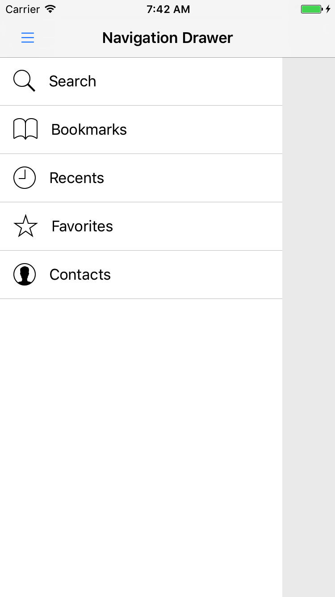

Software Design UI / UX
Was zeichnet “nutzbare” Software aus?
Eine kleine Geschichte…
Basiert auf
Jesse James Garrett (2010) “The Elements of User Experience: User-Centered Design for the Web and Beyond”
Was ist mit dem Wecker los?
Jetzt erstmal einen Kaffee…
Der Sprit reicht nicht aus…
Barzahlung dauert heute länger…
Umleitung nötig…
Flug verpasst :(
…und der Zusammenhang zu Usability
Wecker
- Die Katze hat den Alarm deaktiviert
- Ein minimal anderes Design hätte das verhindern können
Kaffeemaschine
- Die Kaffeemaschine war überhaupt nicht angeschaltet
- Visuelles Feedback nötig
Zapfsäule
- Falsches Einsetzen der Kreditkarte
- Kann durch Piktogramm verhindert werden
Barzahlung
- Bedienprobleme der Kasse führten zur erhöhten Wartezeit
Autounfall
- Autounfall weil ein Fahrer zu lange durch die Radiobedienung abgelenkt war
- Ließe sich durch besseres Bedienkonzept vermeiden
Sketching (Exkurs)
Motivation
- Die kommenden Teile beschäftigen sich mit der Konzeption der UI
- Dafür werden wir Modellierungsmöglichkeiten und Werkzeuge kennen lernen
- Stift und Papier haben aber viele Vorteile!
Gründe für das Skizzieren
- Offenere und kreativere Arbeitsweise
- Geschwindigkeit und Menge des Outputs höher
- Diskussions- und Kollaborationsmöglichkeiten besser
Designen, nicht zeichnen!
- Künstlerisches Talent nicht vorausgesetzt
- Werkzeug um Designideen auszudrücken, mitzuteilen und zu kommunizieren
Die richtige Idee


10 plus 10 Methode
Übersicht
- Entwerfe mindestens 10 verschiedene Designs zu einer Idee
- Reduziere die Ideen auf die vielversprechendsten
- Vertiefe 10 Details an den besten Designs
- Präsentiere die Ergebnisse und diskutiere
Beispiel
Zwei Smartphones verbinden
10


Plus 10


Scribble Sketching
Prinzip
- Schnelles Aufnehmen von Ideen
- Low fidelity
- Konzentration auf das Wesentliche
Übungsmöglichkeit
- Existierende UI nehmen
- Scribble Sketch erstellen
- Zeitlimit 30 Sekunden
Beispiel


Skizzieren mit Büromaterial
Idee
- Gewinn von Flexibilität durch z.B. Post Its
- Interaktivität und Kollaboration einfacher
Beispiel


Informationsarchitektur
Top-down Struktur
- Analyse der strategischen Ziele auf oberster Ebene
- Bildung breiter Kategorien
- Sukzessive Unterteilung in Subkategorien
Bottom-up Struktur
- Inhaltsanalyse
- Bildung von Clustern oder Gruppen
- Sukzessive Zusammenfassung in Oberkategorien
Hierarchisch
- Baumstruktur
- Normalerweise unterhalb der Hauptnavigation
Flache Architektur
- Redundante Wege
- Wichtige Informationen über kurze Navigationswege erreichbar
Matrix
- Zwei- oder mehrdimensionale Navigation
- Beispielsweise Produkte
- Farbe
- Größe
- …
Organische Architektur
- Keine regulären Muster
- Nutzer weiß nicht genau, wo er sich gerade in der Informationsarchitektur befindet
- Fördert Exploration
- Unterhaltung
- Bildung
Sequentiell
Wie klassische Medien
Interaktionsmodellierung
Übersicht
- Die UML bietet von Haus kein Modell für Interaktionen
- Garrett hat Visual Vocabulary entwickelt
- Durch die Erfolge mobiler Plattformen sind neue
Modellierungsmöglichkeiten entstanden, z.B.
- Visual Paradigm Storyboard
- Apple Storyboard
Visual Vocabulary

Visual Paradigm Storyboard
Apple Storyboard

Beobachtung
- Letztlich bieten UML-Zustandsautomaten und Einzelbeschreibungen der Seiten ähnliche Möglichkeiten
- Daher werden wir Zustandsautomaten nutzen
Top-Level Navigation (Tabs)
Top-Level Navigation (Drawer)

Beispiel: Android 5 Clock App
- Flache Informationsarchitektur
- Typisch bei
- verschiedenen Sichten auf die selben Daten
- verschiedenen Teilfunktionen einer Gesamtfunktion
Vier Seiten können erreicht werden
- Neuer Alarm (modal)
- Einstellungen
- Hilfe (Link zu einer Webseite)
- Alarmton wählen (in neueren Versionen)
Vier Seiten können erreicht werden
- Neue Zeitzone
- Nachtmodus
- Einstellungen
- Hilfe (Link zu einer Webseite)
Beispiel: iOS 8 Clock App
- Flache Informationsarchitektur
- Typisch bei
- verschiedenen Sichten auf die selben Daten
- verschiedenen Teilfunktionen einer Gesamtfunktion

Eine Seite kann erreicht werden: Neue Zeitzone (modal)
- Eine Seite kann erreicht werden: Neuer Alarm (modal)
- Von dort sind noch weitere Seiten erreichbar
Beispiel: Citizen Quartz Multi-Alarm III
- Sequentielle Informationsarchitektur
- Technische Gründe
- Keine Touchbedienung
- Wenig Bedienlemente (Knöpfe)

Interaktionsdesign (Beispiel)
Benutzerschnittstellen-design
Anzeigeelemente
Für die reine Anzeige können normalerweise vor allem Texte (Labels) und Bilder genutzt werden.
Bedienelement Checkbox
- Optionen auswählen
- Checkboxen sind unabhängig voneinander
Radio buttons
- Optionen auswählen
- Optionen schließen sich gegenseitig aus
Eingabefelder
Zur Texteingabe
Dropdown Listen
- Ähnlich wie Radio Buttons
- Kompakter
List Boxen
- Ähnlich wie Checkboxen
- Kompakter
Buttons
- Für unterschiedliche Aktionen
- Kann das Ende einer Eingabe signalisieren
Wireframes
Einführung
- Kondensierte Sicht auf Komponenten und Interaktionen einer Seite
- Unabhängig vom endgültigen Design
Paper Prototyping
- Schnellstes und often auch kreativstes Hilfsmittel sind Stift und Papier
- Erleichtern die Zusammenarbeit
- Können auch interaktiv genutzt werden.

Alarm

Stopwatch

Timer

Seitenspezifikationen
Übersicht
- Seitenspezifikationen ergänzen Wireframes um einige Informationen
- Hilfreiche Ergänzung für Umsetzung
- Navigation
- Einzelanmerkungen zu Bedienelementen
- Fehlersituationen
- Zusammen mit Interaktionsdesign Beschreibung einer Bedienoberfläche
Seitenspezifikation (Beispiel)
Wireframes als Prototypen
Wireframes in IDE
- Wireframes können auch mit z.B. SwiftUI oder Jetpack Compose erstellt werden
- Bei vorsichtiger Nutzung ist Wiederverwendung möglich
- Mögliche Nachteile:
- Unsauberer Code im fertigen Produkt
- Fehlgeleitete Erwartungen